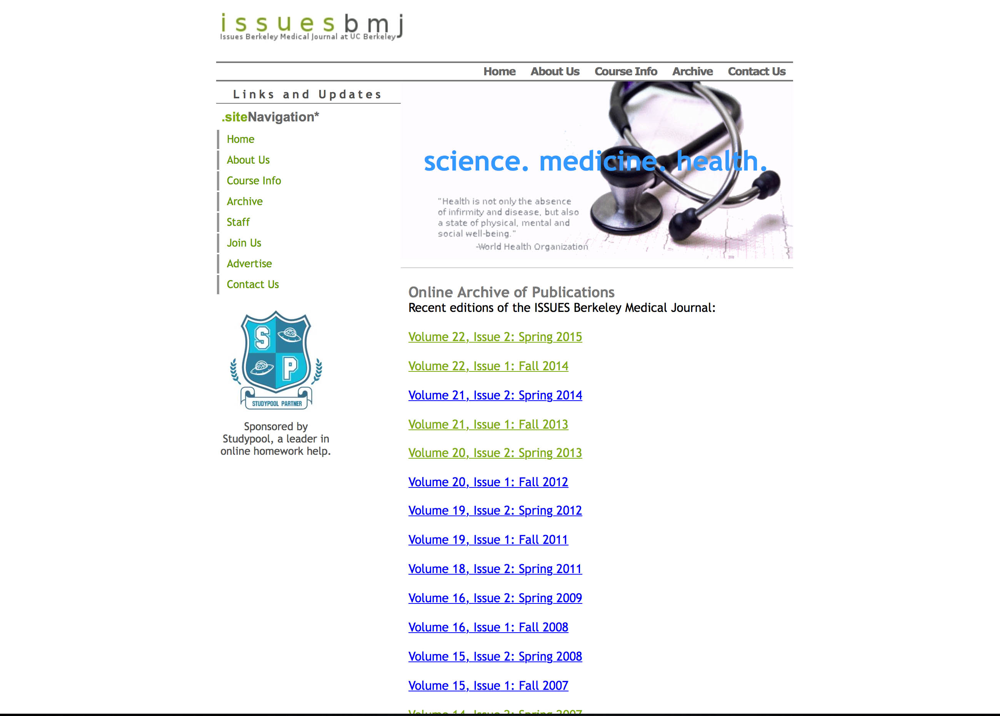
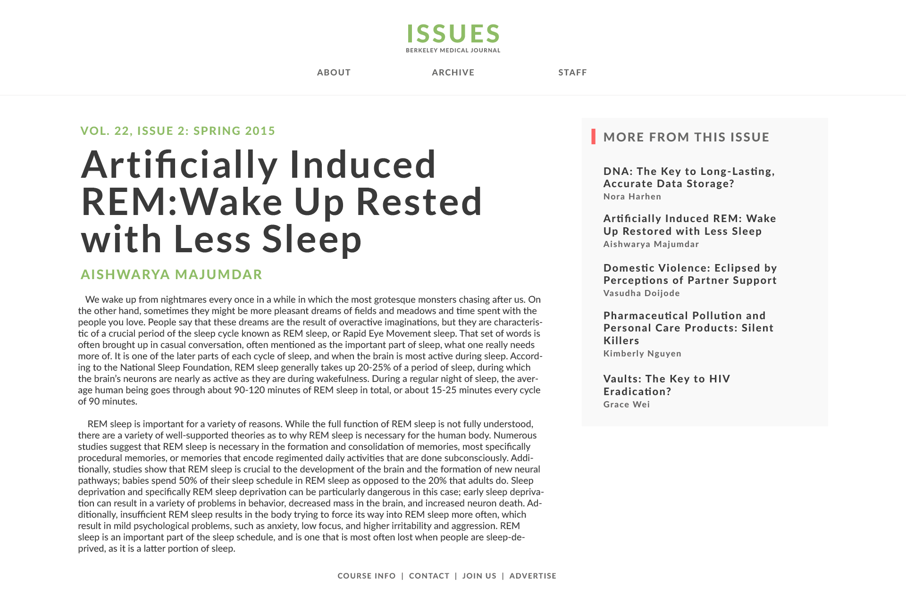

The current issues site. Home view.
The current issues site. Archive.
The current issues site. Archive, second page.
 Technologies used:
Technologies used:My redesign. Home page
 Technologies used:My redesign. Article page
 Technologies used:
Technologies used:My redesign. Archive page